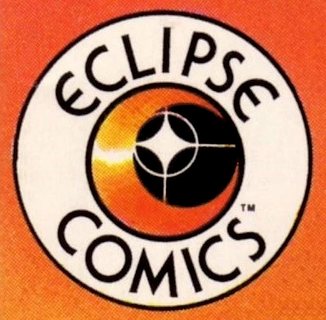

Eclipse Comics was an American comic book publisher, one of several independent publishers during the 1980s and early 1990s. In 1978, it published the first graphic novel intended for the newly created comic book specialty store market. It was one of the first to offer royalties and creator ownership of rights, and the first comics company to publish trading cards.
The company was founded as Eclipse Enterprises by brothers Jan and Dean Mullaney in 1977. Eclipse published one of the first original graphic novels, and the first to be sold through the new "direct market" of comic-book stories,] Sabre: Slow Fade of an Endangered Species by Don McGregor and Paul Gulacy. Published in August 1978, it led to a 14-issue spin-off series for Eclipse.
McGregor went on to write two additional early graphic novels for Eclipse, each set in contemporary New York City and starring interracial-buddy private eyes Ted Denning and Bob Rainier: Detectives, Inc.: A Remembrance of Threatening Green (1980), with artist Marshall Rogers, and Detectives, Inc.: A Terror Of Dying Dreams (1985), with artist Gene Colan, who would become a frequent collaborator.
The company had early success with the anthology magazine Eclipse and color comic Eclipse Monthly, as well as with the detective series Ms. Tree by Max Allan Collins. Creators whose early work appears in Eclipse publications include Chuck Austen, Donna Barr, Dan Brereton, Chuck Dixon, James Hudnall, Scott McCloud, Peter Milligan, Tim Truman, and Chris Ware. Veterans published by Eclipse include Steve Englehart, Don McGregor, Gene Colan, and Mark Evanier. The company published Alan Moore's series Miracleman.
Eclipse Titles
3-D Alien Terror (1986)
3-D Lars of Mars (April 1987)
3-D Laser Eraser and Pressbutton
3-D Three Stooges (1986–1987)
Aces
Adolescent Radioactive Black Belt Hamsters
Adolescent Radioactive Black Belt Hamsters in 3-D
Adolescent Radioactive Black Belt Hamsters Massacre the Japanese Invasion
Airboy
Airboy Meets the Prowler
Airboy - Mr.Monster special
Airboy versus the Airmaidens
Air Fighters Classics
Airfighters Meet Sgt. Strike Special
Airmaidens Special
Allan W. Eckert's Tecumseh!
Alex Toth's Zorro
Alien Encounters
Alien Worlds
All Star Index
Amazing Cynicalman
Appleseed
Area 88
Ariane & Bluebeard
Axa
Axel Pressbutton
Aztec Ace
Back Down the Line
Bedlam
Bernie Wrightson Master of the Macabre
Black Magic
Black Terror
Blandman
Blood Is the Harvest
Bob Powell's Timeless Tales
Bogie
Born to Be Wild
Brian Bolland's Black Book
Brought to Light
Bullet Crow, Fowl of Fortune
Buster Keaton
California Girls (1987)
Cap'n Quick and a Foozle
Captain EO 3-D
Champions (1986) - Based on the RPG series.
Clint
Clive Barker: The Life of Death (1993)
Clive Barker: Son of Celluloid (1991)
Clive Barker: Revelations (1992)
Comics Express
The Complete Alec
The Complete Pogo Comics
Contractors
Coyote
Crossfire
Crossfire & Rainbow
Cyber 7
Daughters of Fly In My Eye
David Chelsea In Love
Detectives Inc.: A Remembrance of Threatening Green (1980)
Detectives, Inc.: A Terror of Dying Dreams (1985)
Destroy!!
Destroyer Duck
Dinosaurs Attack!
Directory to a Non-Existent Universe
The Dirty Pair: Biohazards
The Dirty Pair: Dangerous Acquaintances
Dishman
The DNAgents
Dominion
Downside
Dragon Chiang
Dragonflight
Dread (1992)
The Dreamery
Eclipse Magazine
Eclipse Monthly
El Salvador: A House Divided
Elf-Thing
Enchanter
Espers
Farewell to the Gipper
Fashion in Action
Fast Fiction: She
Fearbook
Floyd Farland - Citizen of the Future
Fly In My Eye
Fly In My Eye Exposed
The Foozle
Fun With Reid Fleming (World's Toughest Milkman)
Fusion
Giant-Size Mini Comics
Groo Special
Guerilla Groundhog
Halloween Horror
Hand of Fate
Heartbreak Comics
Hembeck: The Best of Dateline: @!!?# (1979)
The Hobbit
Hotspur
I Am Legend (1991)
Illegal Aliens (Sept. 1992)
Iran-Contra Scandal Trading Cards
James Bond 007: Licence to Kill (1989)
James Bond 007: Permission to Die (1989-1991)
Jiggs is Back
John Bolton's Halls of Horror
John Law Detective
Johnny Comet
The Johnny Nemo Magazine
Kamui
Killer ... Tales
Kitz 'n' Katz Komics
Krazy & Ignatz
Larry Marder's Beanworld
Laser Eraser and Pressbutton
Last Kiss
The Legend of Kamui
The Liberty Project
Life in Northwest Nowhere
Loco vs. Pulverine
Lost Continent
Lost Planet
Luger
Mad Dogs
The Magic Flute
Man of War
Masked Man
Mai, the Psychic Girl
Merchants of Death
Metaphysique
Mike Mist Minute Mist-Eries
Millennium Index
Milton Caniff's America
Miracleman
Miracleman: Apocrypha
The Miracleman Family
Moderne Man Comics
Modesty Blaise: First American Editions
Mr. Monster's Super Duper Special
Ms. Tree
Mr. Monster
Naive Inter-Dimensional Commando Koalas
New America
The New DNAgents
The New Wave
The New Wave Vs. the Volunteers
New York: Year Zero
Night Music
Nightmares
The Official Crisis On Infinite Earths Crossover Index
The Official Crisis On Infinite Earths Index
The Official Hawkman Index
The Official Justice League Index
The Official Legion of Super-Heroes Index
The Official Teen Titans Index
One Mile Up
Opera
ORBiT
The Original Zot!
Overload Magazine
Parts Unknown
P.J. Warlock
Phaze
Pigeons from Hell
Point Blank
Portia Prinz of the Glamazons
Power Comics
The Price
The Prowler
The Prowler in White Zombie
R.O.B.O.T. Battalion 2050
Radio Boy
Rael: Into the Shadow of the Sun
Ragamuffins
Rawhead Rex (1994)
Real Love: The Best of Simon and Kirby Romance Comics
Real War Stories
Reese's Pieces
Reid Fleming, World's Toughest Milkman
Retaliator
The Return of Valkyrie
The Revenge of the Prowler
The Rime of the Ancient Mariner
Robin Hood
The Rocketeer
The Rocketeer Special Edition
Sabre: Slow Fade of an Endangered Species (1978)
Sabre
The Sacred and the Profane
Sam Bronx and the Robots
Samurai, Son of Death
Saturday Mourning: Fly In My Eye
The Science Service
Seduction of the Innocent #1-#6 (1985)
Scorpio Rose
Scout
Scout: The Four Monsters
Scout: Mount Fire
Scout: War Shaman
Scout Handbook
Siegel and Shuster, Dateline 1930s
Silverheels
The Sisterhood of Steel
Skywolf
Somerset Holmes
Spaced
The Spider
The Spider: Reign of the Vampire King
The Spiral Path
Spittin' Image
Star Reach Classics
Steed and Mrs. Peel
Stewart the Rat
Stig's Inferno
Stormwatcher
Star*Reach Classics
Stinz: Horsebrush and Other Tales
Straight Up to See The Sky
Strange Days
Strike!
Strike! vs. Sgt. Strike Special
Sun Runners
Surge
Swords of Texas
Swordsmen and Saurians
Tales from the Plague
Tales of the Mysterious Traveler
Tales of Terror
Tapping the Vein (1989)
Target: Airboy
Teen-Aged Dope Slaves and Reform School Girls
Tips from Top Cartoonists
Toadswart d'Amplestone: A Gothic Tale of Horror and Magick
Tor 3-D
Total Eclipse
Total Eclipse: The Seraphim Objective
Trapped - Dean R. Koontz
True Crime Comics
True Crime Comics Special
True Love
Twisted Tales
The Twisted Tales of Bruce Jones
The Unknown Worlds of Frank Brunner
Valkyrie!
Valkyrie: Prisoner of the Past
Velocity
Villains and Vigilantes
Walt Kelly's Christmas Classics (1987)
Walt Kelly's Springtime Tales
Weird Romance (1988)
Weasel Patrol
What's Michael?
Whodunnit?
Wilderness Graphic Album
Will Eisner Presents
Winter World
World of Wood
X-Farce
Xanadu Color Special
Xenon
XYR
The Yattering and Jack (1991)
Zooniverse
Zorro in Old California
Zot!